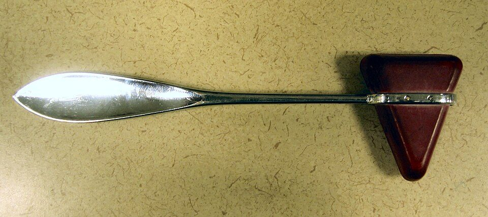
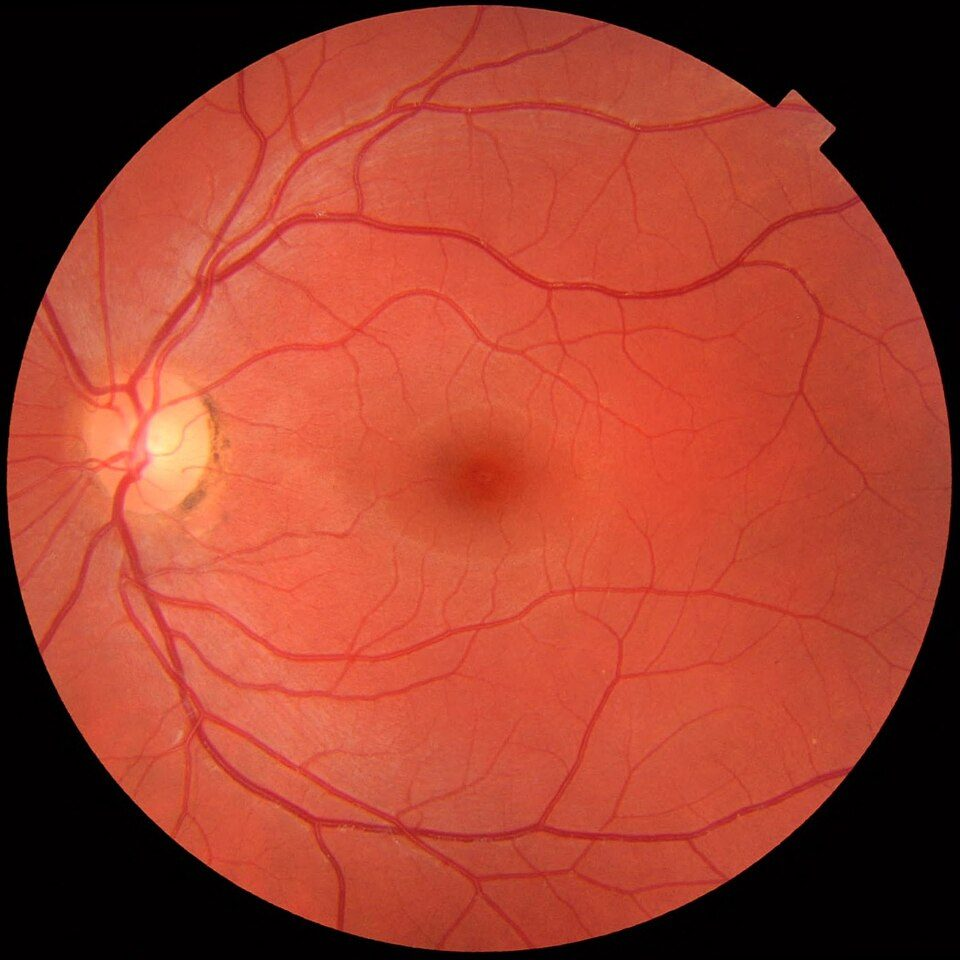

La pregunta clave: ¿dónde está la lesión?
La neurología es una especialidad muy anatómica. A partir de la historia clínica y la exploración, el neurólogo intenta responder dos preguntas: dónde está el problema (cerebro, tronco, médula, nervio, unión neuromuscular o músculo) y qué lo causa (vascular, inflamatorio, degenerativo…). Solo después se piden las pruebas adecuadas.


Qué se explora
- Estado mental: atención, orientación, memoria, lenguaje.
- Nervios craneales: pupilas, campo visual, fondo de ojo, movimientos de los ojos, sensibilidad y movimiento de la cara, audición, deglución, lengua. Ver nervios craneales.
- Fuerza de cada grupo muscular (se gradúa de 0 a 5) y tono (rigidez o flacidez).
- Reflejos con el martillo: rodilla, tobillo, bíceps… Y el reflejo cutáneo plantar: si el dedo gordo sube al rascar la planta (signo de Babinski), indica una lesión de la vía motora central. Lo describió Joseph Babinski en 1896.
- Sensibilidad: tacto, dolor, temperatura, vibración (con un diapasón) y posición de los dedos.
- Coordinación: tocarse la nariz con el dedo, movimientos alternos rápidos.
- Marcha y equilibrio: caminar en línea, de puntillas y talones, prueba de Romberg (de pie con los ojos cerrados).


Por qué importa
Un patrón concreto apunta a una localización: por ejemplo, debilidad con reflejos aumentados y Babinski sugiere una lesión del cerebro o la médula; debilidad con reflejos abolidos y atrofia, del nervio o la motoneurona. Una buena exploración evita pruebas innecesarias y orienta las útiles.
Fuentes
- Campbell WW, Barohn RJ. DeJong's The Neurologic Examination. 8.ª ed. Wolters Kluwer; 2020.
- Nicholl DJ, Appleton JP. Clinical neurology: why this still matters in the 21st century. J Neurol Neurosurg Psychiatry. 2015;86:229-33. doi:10.1136/jnnp-2013-306881.